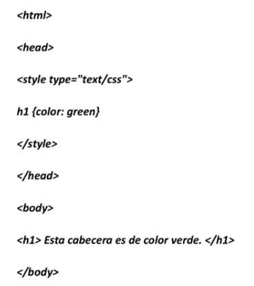
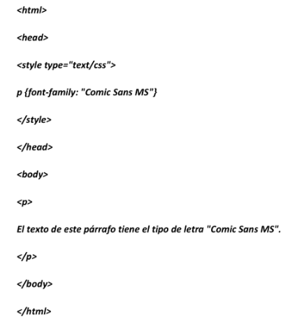
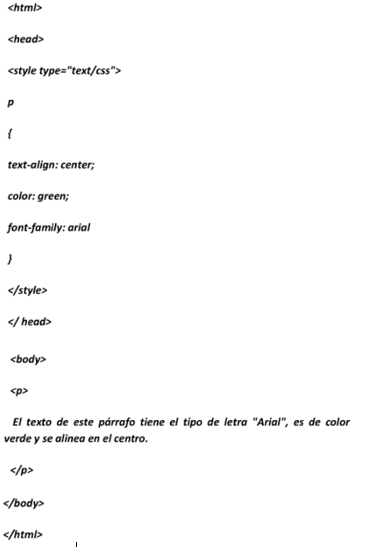
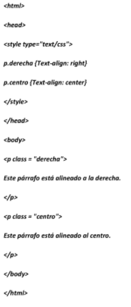

TEMA 1
SINTAXIS Y SELECTORES CSS
La sintaxis de las definiciones CSS consta de dos partes: un selector y una declaración. a continuacion un ejemplo:
h1 {color:green}
h1--> Selector
Color:green --> Declaración
En este ejemplo, el selector h1 dice que el estilo se aplica a los elementos h1 y la definición dice que el color del texto de estos elementos debe ser color verder ("green").
La declaración se encierra entre llaves ({...}) y puede contener varias definciones. cada una consta de de un par de propiedades esta separado por el caracter (:). como lo muestro a continuación
selector {propiedad:valor}
El siguiente ejemplo le permite probar de inmediato lo indicado:

El selector es normalmente el nombre de un elemento HTML pero también puede ser un selector de clase, un ID de selector o un selector de contexto.
Si el valor que queremos dar a la propiedad tiene mas de una palabra le puede poner entre comillas, como se muestra a continuación:

Dentro de las llaves ({...}) puede poner múltiples definciones separadas por el caracter ";" (punto y coma). el siguiente ejemplo define tres propiedades
para el elemento P, que son la alineación, el color de texto y la fuente.

SELECTORES DE GRUPOS
Si tiene que aplicar estilos a más de un elemento puede agrupar los selectores que compartan las mismas definiciones. para ellos se ecriben uno tras otro
separador por una coma.
h1,h2,h3,h4,h5,h6
{ color : green}
SELECTORES DE clase
Los selectores de clase permiten establecer diferentes estilos que se puedan aplicar al mismo. imagine que ustede necesita tener dos párrafos diferentes
en el documento: uno alineado a la derecha y otro alineado al centro. Asi es como los selectores de clase hacen que esta tarea sea muy facil:

SELECTORES DE IDENTIFICACIÓN
El selector de ID es diferente del sector de clase por que se aplica a un solo elemento de la página. Las reglas HTML dictan que los valores
del atributo ID no se pueden repetir en la misma página. De ello se desprende que el número de elementos de identidad de un determinado documento es uno o cero.
Sirvent Collado, L., & Luján-Mora, S. (2013). iDESWEB: Zen Coding para HTML y CSS. iDESWEB.